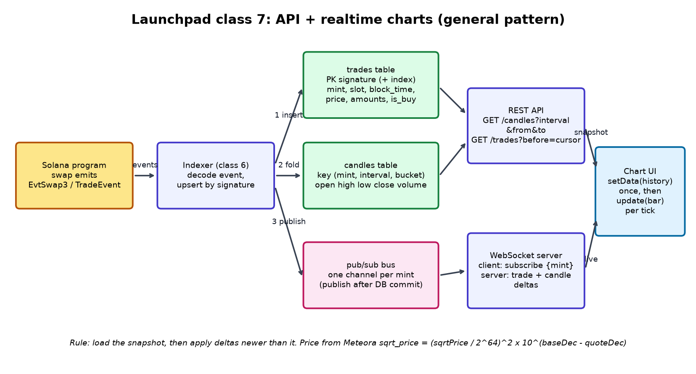

Part 8 · Backend → Frontend
The API and realtime charts
A token page has to show 24 hours of candles straight away, then keep moving with every new trade, and the join between the two must be perfect.
1 Everyday analogy
You join a busy WhatsApp group late. First you read the pinned summary: "Everything up to message #500". Then you read the new messages. Any message numbered 500 or lower is already in the summary, so you skip it. You never miss a message, and you never read one twice.
The candle snapshot is the pinned summary, and the WebSocket feed is the new messages.
2 Design question
When the page loads, the user needs the history, but new trades keep arriving at that same moment. (1) How do you join "past candles" and "live trades" so the chart never skips a trade and never counts one twice? (2) Should the server build the candles, or the browser?
Try to answer on your own first, in plain English. A gut answer is fine.
Reveal answer
(1) Subscribe first, then snapshot, then de-duplicate by cursor General pattern / our clone:
- Open the WebSocket and buffer incoming trades. Don't draw them yet.
- Fetch the snapshot. It includes a cursor,
as_of_seq(or slot + index), saying "this includes everything up to here". - Drop buffered trades with a cursor at or below
as_of_seq, and apply the rest in order. - From then on, apply each live trade, ignoring any whose cursor isn't newer.
(2) The server builds the candles. That gives one source of truth, so every user sees the same chart. It's also cheaper on phones, and the history survives a page reload. The browser only updates the last candle with live trades.
3 Simple explanation
- Candles (OHLCV): for each time bucket you store Open, High, Low, Close and Volume.
- Price from events: each trade event carries the reserves after the trade, so price = virtual SOL ÷ virtual tokens, adjusted for decimals.
- Late trades: if a backfill adds an old trade, mark that candle bucket "dirty" and recompute it, instead of patching it by hand.
- An honest API envelope (from our data-infra classes): return
as_of_slot,commitment, and a freshness value with every response, and flag responses affected by a known indexing gap. - Drawing: TradingView Lightweight Charts gives each series
setData(), which replaces all the data (use it for the snapshot), andupdate(), which updates or appends the last bar (use it for live trades) Real: Lightweight Charts docs.
4 The math
Bucketing, with seconds for one-minute candles:
Price in SOL per whole token, with 9 decimals for SOL and our assumed 6 for the token:
Merge rule: apply a trade only if . Then
Every trade appears exactly once.
5 TypeScript code
Server-side candle builder and the client merge General pattern / our clone (tested):
// Chapter 8 — server-built candles + a gap-free "snapshot then live" merge. OUR CLONE'S DESIGN.
export interface Trade { seq: number; time: number; price: number; volume: number }
export interface Candle { time: number; open: number; high: number; low: number; close: number; volume: number }
/** Bucket trades into candles (time in seconds, bucket = 60 for 1-minute candles). */
export function buildCandles(trades: Trade[], bucket = 60): Candle[] {
const out = new Map<number, Candle>();
for (const t of [...trades].sort((a, b) => a.seq - b.seq)) {
const time = Math.floor(t.time / bucket) * bucket;
const c = out.get(time);
if (!c) out.set(time, { time, open: t.price, high: t.price, low: t.price, close: t.price, volume: t.volume });
else { c.high = Math.max(c.high, t.price); c.low = Math.min(c.low, t.price); c.close = t.price; c.volume += t.volume; }
}
return [...out.values()].sort((a, b) => a.time - b.time);
}
/** Apply one live trade to the last candle (what the browser does on each WebSocket message). */
export function applyLive(candles: Candle[], t: Trade, bucket = 60): Candle {
const time = Math.floor(t.time / bucket) * bucket;
const last = candles[candles.length - 1];
if (last && last.time === time) {
last.high = Math.max(last.high, t.price); last.low = Math.min(last.low, t.price);
last.close = t.price; last.volume += t.volume; return last;
}
const c = { time, open: t.price, high: t.price, low: t.price, close: t.price, volume: t.volume };
candles.push(c); return c;
}
/**
* Client merge: 1) subscribe and BUFFER live trades, 2) fetch the snapshot (which says "as_of_seq"),
* 3) drop buffered trades with seq <= as_of_seq, apply the rest in order, 4) then apply live directly.
*/
export class ChartFeed {
candles: Candle[] = [];
private buffer: Trade[] = [];
private asOfSeq: number | null = null;
onLive(t: Trade) {
if (this.asOfSeq === null) { this.buffer.push(t); return; }
if (t.seq <= this.asOfSeq) return; // already inside the snapshot: never count twice
this.asOfSeq = t.seq;
applyLive(this.candles, t);
}
onSnapshot(snapshot: { asOfSeq: number; candles: Candle[] }) {
this.candles = structuredClone(snapshot.candles);
this.asOfSeq = snapshot.asOfSeq;
for (const t of this.buffer.sort((a, b) => a.seq - b.seq)) this.onLive(t);
this.buffer = [];
}
}Download: candles.ts · tested with npx tsx
Wiring it to Lightweight Charts in the browser. This is a browser snippet based on the documented API, and it was not executed in this build:
import { createChart, CandlestickSeries } from "lightweight-charts";
const chart = createChart(document.getElementById("chart")!, { layout: { background: { color: "#0d1117" }, textColor: "#e6e9ef" } });
const series = chart.addSeries(CandlestickSeries);
const feed = new ChartFeed();
const ws = new WebSocket("wss://your-api.example/trades?mint=" + mint);
ws.onmessage = (m) => { feed.onLive(JSON.parse(m.data)); draw(); }; // 1. subscribe + buffer
const snap = await fetch("/api/candles?mint=" + mint + "&tf=1m").then(r => r.json());
feed.onSnapshot(snap); // 2-3. snapshot, drop <= as_of
series.setData(feed.candles.map(toBar)); // full history once
function draw() { // 4. live: only the last bar
const last = feed.candles[feed.candles.length - 1];
if (last) series.update(toBar(last));
}
const toBar = (c: Candle) => ({ time: c.time as any, open: c.open, high: c.high, low: c.low, close: c.close });6 TypeScript exercise
Implement ChartFeed with onLive(trade) and onSnapshot({asOfSeq, candles}). Prove the result equals buildCandles(allTrades) when two trades arrive before the snapshot, one of them is also inside the snapshot, and one live trade is delivered twice.
Show a solution
See ChartFeed above and the "no skipped, no double-counted trade" assertion in code/pipeline.test.ts.
7 Architecture diagram


8 Sources
- TradingView Lightweight Charts docs
- Lightweight Charts ISeriesApi (setData / update)
- PostgreSQL: INSERT ... ON CONFLICT
addSeries(CandlestickSeries)) but was not run in a browser for this book. The snapshot, buffer and cursor protocol is our clone's design.